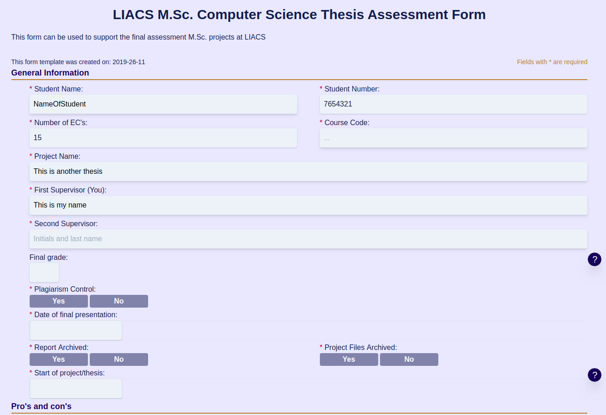
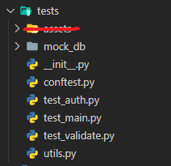
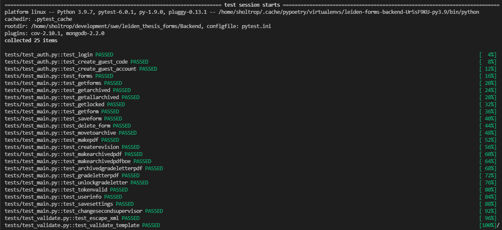
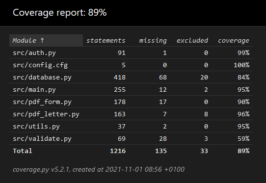
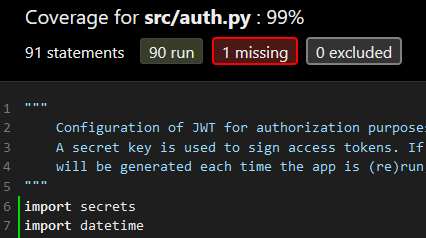
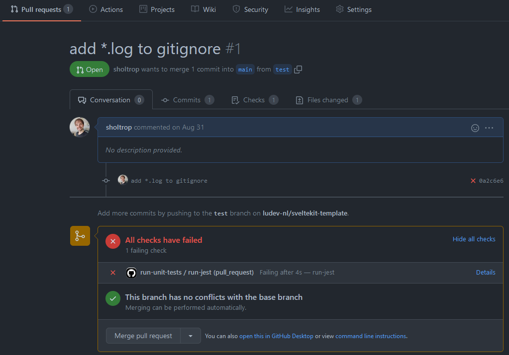

| Error | Prevention |
|---|---|
| Syntax error | Compiler/Interpreter |
| Memory error |
Don't use C / C++ (or use Valgrind, RAII patterns) |
| Type error | Type checker |
| Logical error | Unit tests, integration tests |
assert in
your actual code to ensure invariants

None /
null?
DbConnection

tests
conftest contains test
configuration and fixtures
pytest -v --cov-report=html --cov-report=term-missing --cov=src
tests/



.github at the
root of your repository
.github create a folder
workflows
workflows add a file
run_tests.yml (or any name you
want)
run_tests.yml will contain
configuration for the GitHub actions, in YAML format:
